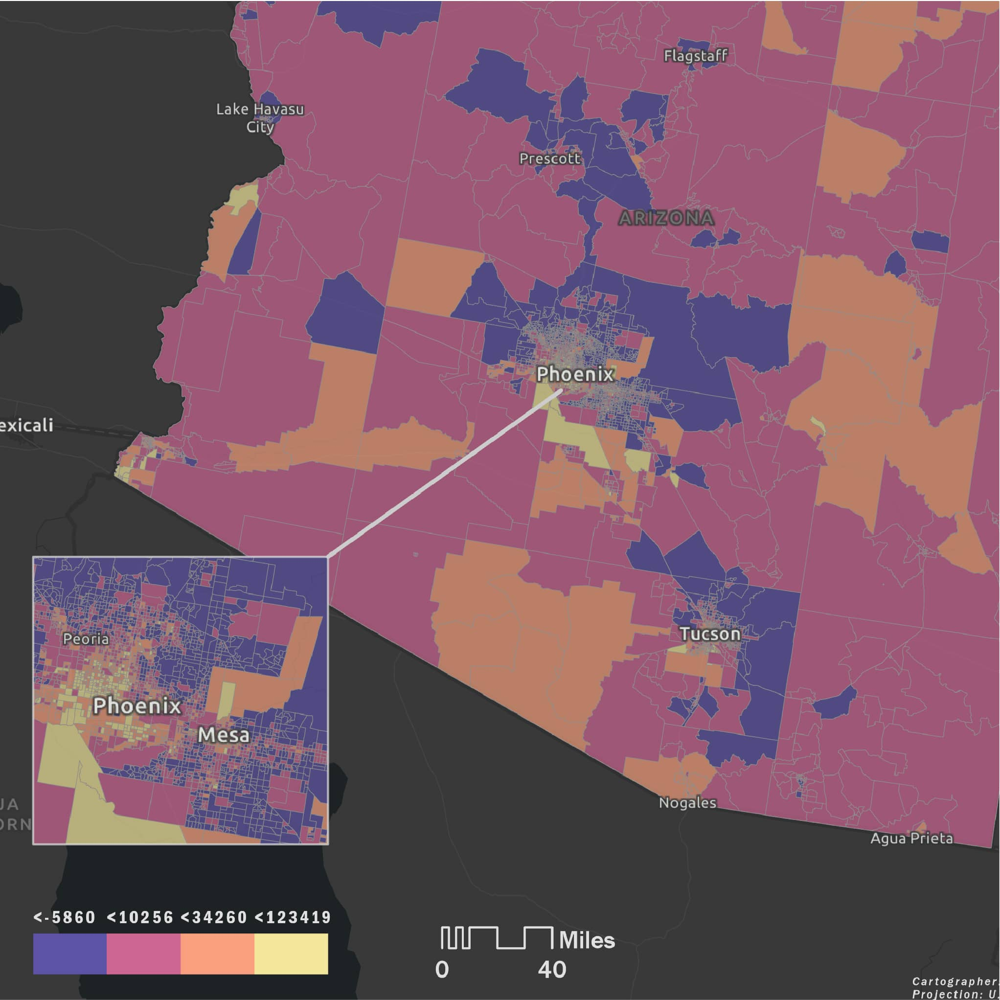
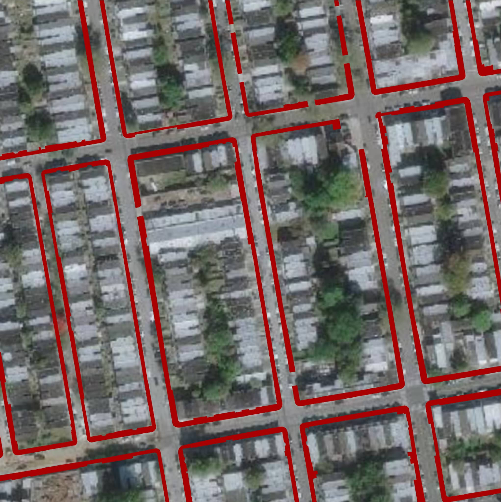

Home
About Me
Contact
Evelyn Gorey GIS Portfolio.
Hi, I'm Evelyn
Cartographer, Researcher, & Data Analyst
All
Cartography
Spatial Analysis
Web Mapping
Remote Sensing
Code Development
Routing a cross-country road trip with Open Source Routing Machine (OSRM)
Spatial Analysis, Code Development
Philly Tree Plan Street Tree Opportunity Map
Web Mapping, Spatial Analysis
Coloring USGS point cloud data
Cartography
Monitoring impacts of the U.S.-Mexico border wall on endangered wildlife
Spatial Analysis, Cartography
Poster: An Analysis of Victim Residences and Injury Locations in Philadelphia
Spatial Analysis
Automating a Survey123 feature's edits & geocoding
Spatial Analysis, Code Development
Relief map & LiDAR visualization of Sequoia National Park
Cartography
Accessing ACS data through the census API and mapping with folium
Spatial Analysis, Code Development
Hunting Park: A Model for Urban Cooling
Spatial Analysis, Cartography
Creating shared axes bar plots with patchwork and ggplot2
Code Development
Mapping Drivers of Ecosystem Change in Colombia
Remote Sensing
Relief maps of U.S. states & national parks
Cartography
Kauri Dieback Analysis: Waitakere Ranges, Aotearoa/New Zealand
Remote Sensing
Post-classification natural forest change analysis
Remote Sensing, Code Development
Static maps for NRECA International's National Least Cost Planning project in the DRC
Cartography
Post-classification spatial filtering
Remote Sensing, Code Development
Park tree mapping progress
Spatial Analysis, Code Development
Mass-producing stylized charts and tables with pandas, matplotlib, and HTML + CSS
Code Development
Topography study: Svolvær, Nordland, Norway
Cartography
Exploring Arizona environmental justice characteristics
Web Mapping, Spatial Analysis, Code Development

Temple University Tree Benefits
Web Mapping
Estimating sidewalk width for street tree plantings
Spatial Analysis

Internal Parks & Recreation sites Experience Builder
Web Mapping
Static maps for the Temple University Facilities Information Research & Management Office
Cartography
Downtown maps: Philadelphia & Baltimore
Cartography
Location Allocation Analysis: L&I Offices in Philadelphia
Spatial Analysis